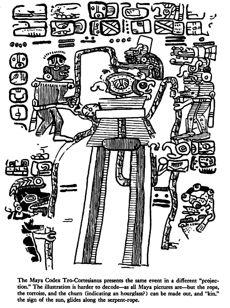

X. The Twilight of the Gods
THERE WAS ONCE, then, a Golden Age. Why, how, did it come to an end? This has been a deep concern of mankind over time, refracted in a hundred myths, explained in so many ways which always expressed sorrow, nostalgia, despondency. Why did man lose the Garden of Eden? The answer has always been, because of some original sin. But the idea that man alone was able to commit sin, that Adam and Eve are the guilty ones, is not very old. The authors of the Old Testament had developed a certain conceit. Christianity then had to come to rescue and restore cosmic proportions, by insisting that God alone could offer himself in atonement.
In archaic times, this had seemed to be self-evident. The gods alone could run or wreck the universe. It is there that we should search for the origin of evil. For evil remains a mystery. It is not in nature. The faultless and all-powerful machine of the heavens should have yielded only harmony and perfection, the reign of justice and innocence, rivers flowing with milk and honey. It did, but that time did not last. Why did history begin to happen? History is always terrible. Philosophers from Plato to Hegel have offered their own lofty answer: pure Being was confronted of a necessity with Non-Being, and the result was Becoming, which is an uninsurable business. This was substantially the original answer of archaic times, but because of the lack of abstractions, it had to be derived in terms of heavenly motions.
Aristotle, the Master of Those Who Know, has cleared up this matter in a most important, yet little noted passage of Book Lambda of Metaphysics (1074b) where he talks about Kronos, Zeus, Aphrodite, etc.:
Our forefathers in the most remote ages (archaioi kai panpalaioi) have handed down to their posterity a tradition, in; the form (schema) of a myth, that these bodies are gods and that the divine encloses the whole of nature. The rest of the tradition has been added later in mythical form . . . ; they say that these gods are in the form of men or like some of the other animals . . . But if one were to separate the first point from these additions and take it alone — that they thought the first substances to be gods, one must regard this as an inspired utterance, and reflect that, while probably each art and each science has often been developed as far as possible and has again perished, these opinions, with others, have been preserved until the present like relics (leipsana) of the ancient treasure.
Aristotle, being a true Greek, cannot conceive of progress in our sense. Time proceeds for him in cycles of flowering and decay. But this absence of modern preconceptions had left his mind open to an ancient certainty. This certainty is what shines through the mist of ages and through a language dimly understood. It was attention to the events of heaven which shaped men's minds before recorded history; but since there was as yet no writing, the thoughts have receded, as astrophysicists would say, over the "event horizon." They can survive only through fragments of tale and myth because these made up the only technical language of those times.
Yet an enormous intellectual achievement is presupposed in this organization of heaven, in naming the constellations and in tracing the paths of the planets. Lofty and intricate theories grew to account for the motions of the cosmos. One would wonder about this obsessive concern with the stars and their motion, were it not the case that those early thinkers thought they had located the gods which rule the universe and with it also the destiny of the soul down here and after death.
In modern language, they had found the essential invariants where Being is. In paying respect to those forefathers, Aristotle shows himself clearly aware that his philosophical quest started with them.
One should pay attention to the cosmological information contained in ancient myth, information of chaos, struggle and violence. They are not mere projections of a troubled consciousness: They are attempts to portray the forces which seem to have taken part in the shaping of the cosmos. Monsters, Titans, giants locked in battle with the gods and trying to scale Olympus are functions and components of the order that is finally established.
A distinction is immediately clear. The fixed stars are the essence of Being, their assembly stands for the hidden counsels and the unspoken laws that rule the Whole. The planets, seen as gods, represent the Forces and the Will: all the forces there are, each of them seen as one aspect of heavenly power, each of them one aspect of the ruthless necessity and precision expressed by heaven. One might also say that while the fixed stars represent the kingly power, silent and unmoving, the planets are the executive power.
Are they in total harmony? This is the dream that the contemplative mind has expressed again and again, that Kepler tried to fix by writing down the notes of his "Harmony of the Spheres," and that was consecrated in the "turning over" of the sky. This is the faith expressed by ancient thinkers in a Great Year, in which all the motions brought back all the planets to the same original configuration. But the computations created doubt very early and with it anxiety. Only rarely is there an explicit technical statement of those views. Here is one from the Egyptian Book of the Dead, Osiris speaking:
"Hail, Thot! What is it that hath happened to the divine children of Nut? They have done battle, they have upheld strife, they have made slaughter, they have caused trouble: in truth, in all their doing the mighty have worked against the weak. Grant, O might of Thot, that that which the God Atum hath decreed (may be accomplished)! And thou regardest not evil nor art thou provoked to anger when they bring their years to confusion and throng in and push to disturb their months; for in all that they have done unto thee, they have worked iniquity in secret!". [1]
Thot is the god of science and wisdom; as for Atum, he precedes, so to speak, the divine hierarchy. Described only in metaphysical terms, he is the mysterious entity from which the All sprang: his name might be Beginning-and-End. He is thus the Presence and the secret Counsel whom one feels tempted to equate with the starry sky itself. His decree must be of immutable perfection. But here it appears that there are forces which have worked iniquity in secret. They appear everywhere, these forces, and regularly they are denounced as "overbearing," or "iniquitous," or both. But these "forces" are not iniquitous right from the beginning: they turn out to be, they become overbearing in the course of time. Time alone turns the Titans, who once ruled the Golden Age, into "workers of iniquity" (compare appendix #12). The idea of measure stated or implied will show the basic crime of these "sinners": it is the over reaching, overstepping of the ordained degree, and this is meant literally. [2] Says the Mahabharata about the Indian Titans, the Asura: "assuredly were the Asura originally just, good and charitable, knew the Dharma and sacrificed, and were possessed of many other virtues . . . But afterwards as they multiplied in number, they became proud, vain, quarrelsome . . . they made confusion in everything. Thereupon in the course of time . . ." they were doomed. [3]
Thus severe consequences must be expected when Gen. vi. I commences with the formula, "when men began to multiply on the face of the earth . . ." And sure enough, ten verses later, Gen. vi. 11, the time for grave decisions has come: "And God said to Noah, 'I have determined to make an end of all flesh!' " More outspoken is the 18th chapter of the Book of Enoch, where an Angel acts as Enoch's guide through the celestial landscape. In showing him the quarters destined for iniquitous personalities, the Angel tells Enoch: "These stars which roll around over the fire are those who, at rising time, overstepped the orders of God: they did not rise at their appointed time. And He was wroth with them, and He bound them for 10,000 years until the time when their sin shall be fulfilled." [4]
Yet one must beware of simplifications. The wording, "assuredly were the Asura originally just, good and charitable," goes for the Titans, too, the forces of the first age of the world. But seen through the "eyeglasses" of the preceding state of things, Titans, Asura and their like had committed atrocities first. And so did Saturn, the "originator of times," and in the drastic measure he took to accomplish the "separation of the parents of the world," which stands for the falling apart of the axes of equator and ecliptic. Before this separation time did not exist. These "united parents" — heartlessly called "chaos" by Macrobius — resented the breaking up of the original eternity by the forces which worked iniquity in secret. [5] These forces as they appear in the Enuma elish, the so-called Babylonian Creation Epic, are the children of Apsu and Tiamat and they crowded in between their parents. "They disturbed Tiamat as they surged back and forth; yea, they troubled the mood of Tiamat. Apsu could not lessen their clamor . . . Unsavory were their ways, they were overbearing." [6]
Not having "multiplied" yet, this first generation of the world established the Golden Age under the rule of Him of many names — Enki, Yima, Freyr and many more. "But these sons whom he begot himself, great Heaven (megas Ouranos) used to call Titans (Strainers) in reproach, for he said that they strained and did presumptuously a fearful deed, and that vengeance for it would come afterwards," as Hesiod has it (Theogony 207-10). [7] And so it would, after their "multiplication," when they overstrained the measure. And it was bound to happen again when future generations would construct "forbidden ways to the sky, [8] or build a tower which happened to be too high. The one secure measure, the "golden rope" of the solar year, [9] is stretched beyond repair. The equinoctial sun had been gradually pushed out of its Golden Age "sign," it had started on the way to new conditions, new configurations. This is the frightful event, the unexpiable crime that was ascribed to the Children of Heaven. They had nudged the sun out of place, and now it was on the move, the universe was out of kilter and nothing, nothing — days, months or years, the rising or setting of stars — was going to fall into its rightful place any more. The equinoctial point had nudged and nuzzled its way forward, in the very same way as a car with automatic gearshift will nuzzle its way forward unless we put it in neutral-and there was no way of putting the equinox in neutral. The infernal pushing and squeezing of the Children of Heaven had separated the parents, and now the time machine had been set rolling forever, bringing forth at every new age "a new heaven and a new earth," in the words of Scripture. As Hesiod says, the world had entered now the second stage, that of the giants, who were to wage a decisive battle with the restraining forces before their downfall.
The vision of a whole world-age with its downfall is given by the Edda. It comes in the very first poem, the Song of the Sibyl, the Voluspa, in which the prophetess Vala embraces past and future in adequately strange and obscure language. At the beginning of the Age of the Aesir, the gods gather in council, and give; names to sun and moon, days and nights and seasons. They order the years and assign to the stars their places. On Idavollr (the "whiirl-field"; ida = eddy), they establish their seat "in the Golden Age " and play checkers with golden pieces, and all is happiness until "the three awful maidens" come (this is another mystery). [10]
But once before, it is hinted, there has been a "world war" between Aesir and Vanir, which was terminated by a sharing of power. In a vision in which past and future blend in a flash, Vala sees the outcome and announces it to the "high and low children of Heimdal," that is, to all men. She asks them to open their eyes, to understand what the gods had to know: the breaking of the peace, the murder of Thjassi, Odin himself abetting the crime and nailing Thjassi's eyes to heaven. With this a curtain is lifted briefly over a phase of the past. For Thjassi belongs to the powers that preceded the Aesir. In Greek terms, the Titans came before the gods. The main Vana or Titanic powers (in Rydberg's thoughtful reconstruction) are the three brothers, Thjassi/Volund, Orvandil/Eigil, and Slagfin: the Maker, the Archer, and the Musician. This finally locates Orvandil the Archer, the father of Amlethus. He is one of the three "sons of Ivalde," just as their counterparts in the Finnish epic are the "sons of Kaleva." [11] And Ivalde, like Kaleva, is barely mentioned, never described, at least not under the name Ivalde: there is a glimpse at him under his other name, Wate. Like Kaleva, he is a meaningful void. But all this is of the past. The Sibyl's vision is projected toward the onrushing end. True, Loke has been chained in Hell since he brought about the death of Balder, the great Fenrir wolf is still fettered with chains, once cunningly devised by Loke himself, and they are made up of such unsubstantial things as the footfall of a cat, the roots of a rock, the breath of a fish, the spittle of a bird. [12]
Now the powers of the Abyss are beginning to rise, the world is coming apart. At this point Heimdal comes to the fore. He is the Warner of Asgard, the guardian of the Bridge between heaven and earth, the "Whitest of the Aesir," but his role, his freedom of action, is severely limited. He has many gifts — he can hear grass grow, he can see a hundred miles away — but these powers seem to remain ineffectual. He owns the Gjallarhorn, the great battle horn of the gods; he is the only one able to sound it, but he'll blow it only once, when he summons the gods and heroes to Asgard to their last fight.
Nordic speculation down to Richard Wagner has dwelt with gloomy satisfaction on Ragnarok, [13] the Twilight of the Gods, which will destroy the world. There is the prediction in the Song of the Sibyl, and also in Snorri's Gylfaginning: when the great dog Garm barks in front of the Gnipa cave, when the Fenrir wolf breaks his fetters and comes from "the mouth of the river," [14] his jaws snatching from heaven to earth, and is joined by the Midgard Serpent, then Heimdal will blow the Gjallarhorn, the sound of which reaches through all the worlds: the battle is on. But it is written that the forces of order will go down fighting to atone for the initial wrong done by the gods. The world will be lost, good and bad together. Naglfar, the ship of the dead, built with the nail parings of the living, will sail through the dark waters and bring the enemy to the fray. Then, adds Snorri:
The heavens are suddenly rent in twain, and. out ride in shining squadrons Muspel's sons, and Surt with his flaming sword, at the head of the fylkings. [15]
All-engulfing flames come out with Surt "the Black," who kills Freyr, the Lord of the Mill. Snorri makes Surt "Lord of Gimle" and likewise the king of eternal bliss "at the southern end of the sky." [16] He must be some timeless force which brings destructive fire to the world; but of this later.
Hitherto all has been luridly and catastrophically and murkily confused as it should be. But the character of Heimdal raises a number of sharp questions. He has appeared upon the scene as "the son of nine mothers"; to be the son of several mothers is a rare distinction even in mythology, and one which Heimdal shares only with Agni in the Rigveda, [17] and with Agni's son Skanda in the Mahabharata Skanda (literally "the jumping one" or "the hopping one") is the planet Mars, also called Kartikeya, inasmuch as he was borne by the Krittika, the Pleiades. The Mahabharata [18] insists on six as the number of the Pleiades as well as of the mothers of Skanda and gives a very broad and wild description of the birth and the installation of Kartikeya "by the assembled gods . . . as their generalissimo," which is shattering, somehow, driving home how little one understands as yet. [19]
The nine mothers of Heimdal bring to mind inevitably the nine goddesses who turn the mill. The suspicion is not unfounded. Two of these "mothers," Gjalp and Greip, seem to appear with changed names or generations as Fenja and Menja. [20] Rydberg claims Heimdal to be the son of Mundilfoeri. The story is then astronomical. Where does it lead? Thanks to the clues provided by Jacob Grimm, Rydberg and O. S. Reuter, and thanks to many hints hidden in the Rigveda, Atharva Veda and at other unexpected places, one can offer a probable conclusion: Heimdal stands for the world axis, the skambha. His head is the "measurer" (mjotudr) of the same measures that the Sibyl claims to understand: "Nine worlds I know, nine spaces of the measure-tree which is beyond (fyr) the earth". "Measure-tree" is the translation of mjotvidr, [21] which so-called poetic versions usually render as "world tree." The word fyr appears here again; it connotes priority; in this verse 2 of Völuspa it is translated as "below" in most of the cases. The question "who measures what?" would require an extensive analysis; here, with no need for so many details, it is important only to learn that Heimdal is honored by a second name, Hallinskidi (appendix #16). This name is said to mean a bent, bowed or slanted stake or post. To be bent or inclined befits the world axis and all that belongs to it, with the one exception of the observer who stands exactly at the terrestrial North Pole. Why not call it "oblique" or slanting right away? [22]
Whether bent or oblique, Grimm rightly says that it is "worthy of remark that Hallinskidi and Heimdal are quoted among the names for the ram. [23] Heimdal is the "watcher" of the much-trodden Bridge of the gods which finally breaks down at Ragnarok; his "head" measures the crossroads of ecliptic and equator at the vernal equinox in Aries, [24] a constellation which is called "head" also by Cleomedes, [25] and countless astromedical illustrations show the Ram ruling the head (Pisces the feet). Accordingly, one might say that the Sibyl addresses herself to "the high and low children of Aries."
Recalling Rigvedic Agni, son of seven to nine mothers like Heimdal, and remembering what has been said of "fire" that it means more understandable. Heimdal stands for the equinoctial colure which "accompanies" the slowly turning, wholly abstract and invisible axis along the surface of the sphere. It will emerge presently that "axis" always means the whole "frame" of a world-age, given by the equinoctial and solstitial colures. [26] More understandable also becomes another epithet of Heimdal, namely, Vindler, of which Rydberg states (p. 595): "The name is a subform of vindill and comes from vinda, to twist or turn, wind, to turn anything around rapidly. As the epithet 'the turner' is given to that god who brought friction-fire (bore-fire) to man, and who is himself the personification of this fire, then it must be synonymous with 'the borer.' "
The Sibyl's prophecy does not end with the catastrophes, but it moves from the tragic to the lydic mode, to sing of the dawning of the new age:
Now do I see
the Earth anew
Rise all green
from the waves again . . .
Then fields unsowed
bear ripened fruitAll ills grow better.
Even if that generation of gods has perished, the younger ones remain: Balder and Hoder, also the two sons of Thor, and Vidar the son of Odin. The House of the Wise Vanir is not affected as a whole, even if Freyr fell in battle. As the Vanir belong to a past age, this crisis apparently does not concern them. There is in fact a certain perversely nightmarish or neurotic unreality about the tragedy as a whole. The Wolf's fetters were made of nothing but he was able to snap them only when the time came, when Odin and the Sun had to be devoured. The next instant, young Vidar kills the monster simply by thrusting his shoe down his throat (he has one shoe only, just like Jason). It is guilt and the ensuing chaos, more than actual forces, which dragged down the Establishment once the appointed time came, as decreed by fate and sounded on the Gjallarhorn.
What happens after (or happened, or will happen sometime, for this myth is written in the future tense), is told in the Völuspa, but it is also amplified in Snorri's Gylfaginning (53), a tale of a strange encounter of King Gylfi with the Aesir themselves disguised as men, who do not reveal their identity but are willing to answer questions: "What happens when the whole world has burned up, the gods are dead, and all of mankind is gone? You have said earlier, that each human being would go on living in this or that world." So it is, goes the answer, there are several worlds for the good and the bad. Then Gylfi asks: "Shall any gods be alive, and shall there be something of earth and heaven?" And the answer is:
"The earth rises up from the sea again, and is green and beautiful and things grow without sowing. Vidar and Vali are alive, for neither the sea nor the flames of Surt have hurt them and they dwell on the Eddyfield, where once stood Asgard. There come also the sons of Thor, Modi and Magni, and bring along his hammer. There come also Balder and Hoder from the other world. All sit down and converse together. They rehearse their runes and talk of events of old days. Then they find in the grass the golden tablets that the Aesir once played with. Two children of men will also be found safe from the great flames of Surt. Their names, Lif and Lifthrasr, and they feed on the morning dew and from this human pair will come a great population which will fill the earth. And strange to say, the sun, before being devoured by Fenrir, will have borne a daughter, no less beautiful and going the same ways as her mother."
Then, all at once, concludes Snorri's tale wryly, a thunderous cracking was heard from all sides, and when the King looked again, he found himself on the open plain and the great hall had vanished.
The times and tenses are deliberately scrambled, but the statements, even if elliptical, are pregnant with ancient meaning. The rediscovery of the pieces of the game lying around in the grass, already told in the Völuspa, becomes clearer if one thinks of the Rigveda, where the gods themselves are said to go around like ayas, that is, casts of dice. [27] It becomes more understandable still when one considers that the name of the Indian world-ages (Yuga) has been taken from the idiom of dicing. [28] But both data could be dismissed as unrevealing were it forgotten that in several kinds of "proto-chess" — to use an expression of J. Needham — board games and dicing were combined: the number of eyes thrown by the dice determined the figure which was to be moved. [29] That this very rule was also valid for tafl, the board games mentioned in the Völuspa, has been shown by A. G. van Hamel. [30] Thus, the dice forced the hands of the chess player — a game called "planetary battles" by the Indians, and in 16th-century Europe still termed "Celestial War, or Astrologer's Game," [31] whereas the Chinese chessboard shows the Milky Way dividing the two camps. Which goes to show that the Icelanders knew what they were talking about.

Finally, there is one remarkable and disturbing coincidence from the same direction. It is known that in the final battle of the gods, the massed legions on the side of "order" are the dead warriors, the "Einherier" who once fell in combat on earth and who have been transferred by the Valkyries to reside with Odin in Valhalla — a theme much rehearsed in heroic poetry. On the last day they issue forth to battle in martial array. Says the Grimnismal (23): "Five hundred gates and forty more — are in the mighty building of Walhalla — eight hundred 'Einherier' come out of each one gate — on the time they go out on defence against the Wolf."
That makes 432,000 in all, a number of significance from of old. This number must have had a very ancient meaning, for it is also the number of syllables in the Rigveda. But it goes back to the basic figure 10,800, the number of stanzas in the Rigveda (40 syllables to a stanza) which, together with 108, occurs insistently in Indian tradition. 10,800 is also the number which has been given by Heraclitus for the duration of the Aiōn, according to Censorius (De die natali 18), whereas Berossos made. the Babylonian Great Year to last 432,000 years. Again, 10,800 is the number of bricks of the Indian fire-altar (Agnicayana). [32]
"To quibble away such a coincidence," remarks Schroder, "or to ascribe it to chance, is in my opinion to drive skepticism beyond its limits." [33] Shall one add Angkor to the list? It has five gates, and to each of them leads a road, bridging over that water ditch which surrounds the whole place. Each of these roads is bordered by a row of huge stone figures, 108 per avenue, 54 on each side,: altogether 540 statues of Deva and Asura, and each row carries a huge Naga serpent with nine heads. Only, they do not "carry" that serpent, they are shown to "pull" it, which indicates that these 540 statues are churning the Milky Ocean, represented (poorly, indeed) by the water ditch, [34] using Mount Mandara as a churning staff, and Vasuki, the prince of the Nagas, as their drilling rope. (Just to prevent misunderstanding: Vasuki had been asked before, and had agreeably consented, and so had Vishnu's tortoise avatar, who "was going to serve as the fixed base for that "incomparably mighty churn," and even the Milky Ocean itself had made it clear that it was willing to be churned.) The whole of Angkor thus turns out to be a colossal model set up for "alternative motion" with true Hindu fantasy and incongruousness to counter the idea of a continuous one-way Precession from west to east.


Now there is a last paragraph in the Gylfaginning, which is usually considered an afterword, and its authorship is in doubt, for it is supposed that Snorri's Edda was completed by Olaf Hvitaskald (d. 1259), Snorri's nephew. In any case, this addition is somewhat out of the previous context, but it reinforces it:
The Aesir now sat down to talk, and held their counsel, and remembered all the tales that were told to Gylfi. They gave the very same names that had been named before to the men and places that were there. This they did for the reason that, when a long time had elapsed, men should not doubt that those to whom the same names were given, were all identical. There was one who is called Thor, and he is Asa-Thor, the old. He is Oeku-Thor (Chariot-Thor) and to him are ascribed the great deeds by Hektor in Troy.
As for the rebirth of the world, another "Twilight" comes to mind. It is in the Kumulipo, a Polynesian cosmogonic myth from Hawaii. "Although we have the source of all things from chaos, it is a chaos which is simply the wreck and ruin of an earlier world." [35]
Now turns the swinging of time over on the burnt-out world
Back goes the great turning of things upwards again
As yet sunless the time of shrouded light;
Unsteady, as in dim moon-shimmer,
From out Makalii's night-dark veil of cloud
Thrills, shadow-like, the prefiguration of the world to be. [36]
So sang an Oceanian Empedocles long ago. The poem was drawn from very old royal tradition, just as Virgil had drawn his from the story of the Gens Julia, for the true original line of Hawaiian kings was supposed to come from Kane, the Demiurge God of the Pacific.
